Arrows
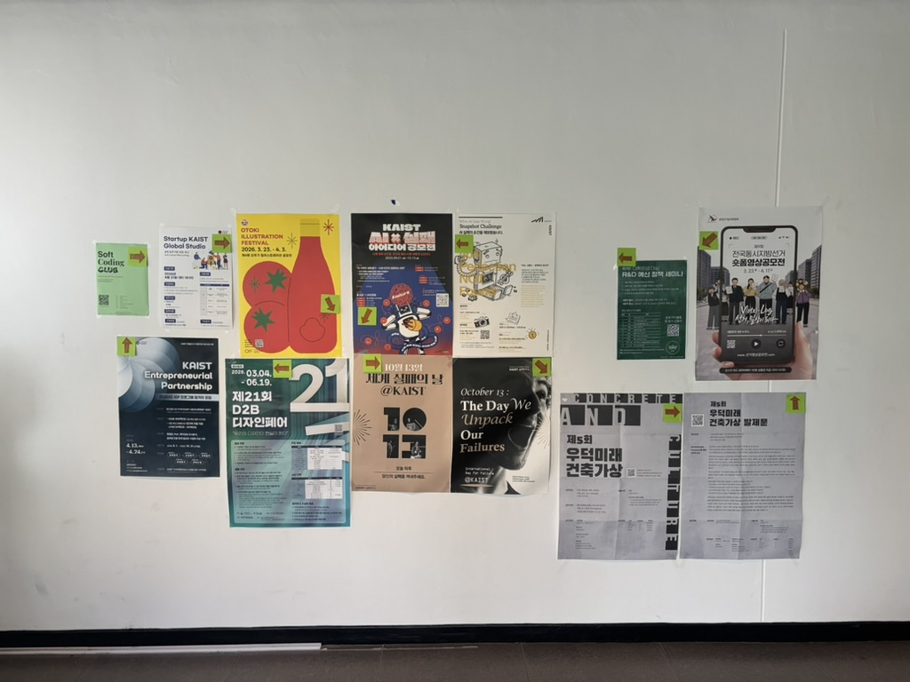
“Arrows”
의미 없는 요소로 포스터를 보는 사람을 늘려보자.
N25 건물 2층 휴게공간 앞 포스터가 붙어있는 공간이 있다. 이 공간에 포스터가 붙어있는 줄 모르는 사람도 있고, 알더라도 포스터를 유심히 보는 사람들이 많이 없다. 직접적이지 않고 아주 사소한 요소를 더하여 이 포스터를 보는 사람들이 많아지도록 하고 싶다. 상세한 조건과 아이디어는 다음과 같다.
Let's try to increase the number of people looking at the posters by adding meaningless elements.
There is a space with posters in front of the lounge on the 2nd floor of the N25 building. Some people do not even realize that posters are there, and even if they do, few look at them closely. I want to subtly add small, indirect elements to increase the number of people paying attention to these posters. The detailed conditions and ideas are as follows.
포스터마다 특정 포스터를 가리키는 화살표 포스터잇을 붙여놓는다.
Arrow post-it are placed on each poster, pointing to a specific poster.
사람들의 시선을 이끌도록 의도하는 바가 겉으로 보이지 않게 하고 싶었다.
I wanted to make the intention of guiding people's attention invisible.
사실은 특별한 의미가 없는 화살표이지만 사람들이 숨은 의미가 있는지 그 방향으로 포스터를 보게 된다.
The arrows don’t have any special meaning, but people look at the poster in the direction of the arrow, wondering if there is a hidden meaning.
화살표 몇 개 만으로 사람들이 신기한 마음에 관심을 가지고, 자연스럽게 특정 방향으로 홍보물을 읽게 된다.
With just a few arrows, people get curious, pay attention, and naturally read the posters in a certain direction.
-
What: 특정 포스터를 가리키는 화살표가 그려진 포스트잇 붙이기
Place sticky notes with arrows pointing to specific posters
-
Where: 2층 휴게공간 앞 포스터 각각에
On each poster in front of the 2nd-floor resting area
-
When: 6/2 - 6/5 (포스트잇 X), 6/8 - 6/10 (포스트잇 O), 아침 9시 - 밤 12시
6/2–6/5 no sticky notes, 6/8–6/10 with sticky notes, 9 AM–12 AM
-
How: 타임랩스 카메라를 이용한 장기관찰
Long-term observation using a time-lapse camera
-
Need: 안쓰는 폰과 삼각대, 화살표가 그려진 포스트잇
Unused phone with tripod, sticky notes with arrows
-
Problem?: 포스터 위 포스터잇을 붙여도 되는지에 대한 허락? 초상권 문제
Permission to put sticky notes on posters, privacy/portrait rights
-
Beauty: 군더더기 없는 과정의 아름다움을 추구한다. 포스트잇만 추가됨 (QR같은 눈에 보이는 무언가가 X), 의도가 잘 드러나지 않음. 순수 궁금증만 유발함.
Aim for the beauty of a minimal process. Only sticky notes are added (no visible elements like QR codes), and the intention is subtle—sparking pure curiosity.
[ 화살표를 붙이기 전 ]
- 6/4 (Thu): 1 person (12 PM – 9 PM)
- 6/5 (Fri): 2 people (10 AM – 9 PM)
- 6/6 (Sat): 0 people (10 AM – 5 PM)
[ 화살표를 붙인 후 ]
- 6/8 (Mon): 4 people (9 AM – 9 PM)
- 6/9 (Tue): 0 people (...) (9 AM - 9 PM)
- 6/10 (Wed): 14 people (!!!) (9 AM - 9 PM)
예상대로 평상시에 홍보물을 보는 사람은 매우 적었으며, 그 마저도 정수기에 물을 뜨거나 전자레인지를 쓰며 기다리는 사람들이 보는 것이었다.
As expected, very few people normally looked at the posters, and those who did were mostly waiting by the water dispenser or using the microwave.
6/5에 포스터 한 장이 떨어져 위태롭게 붙어있었는데, 아무도 이를 신경쓰지 않았다.
On June 5th, one of the posters had fallen and was hanging precariously, but no one paid any attention to it.
카메라를 사람들이 안보이는 다른 곳에 위치시키려 했으나 다음과 같은 이유로 바꾸지 못하였다.
- 폰 충전의 어려움 (hard to charge phone)
- 삼각대가 더 눈에 띔 (tripod would make it more noticeable)
- 시선 이동이 눈에 보이지 않음 (gaze movements would not be visible)
- 이미 촬영중임이 노출됨 (filming was already in progress had been exposed)
촬영 양해를 구하는 포스트잇을 카메라에 붙였었는데, 사람들이 무언가 있다는 것을 알게 된 것 같아 화살표를 붙이고 난 후 그 문구가 적힌 포스트잇을 제거했다.
A post-it indicating that filming was in progress was attached to the camera, but it seemed that people noticed it. After putting up the arrows, that post-it was removed.
포스터를 보는 사람들이 많아지긴 했다.
More people looked at the posters.
그러나 사람들은 바뀐 포스터보다 촬영중인 카메라에 더 관심을 보이는 것 같다. (교수님 포함)
However, people seemed more interested in the filming camera than in the changed posters (including the professor).
포스터에 화살표가 눈에 잘 안 띄는 것 같다. 내일 화살표 포스트잇을 좀 더 눈에 잘 띄는 크고 확실한 색으로 바꿀 필요가 있어 보인다.
The arrows on the posters are not very noticeable. Tomorrow, the arrow post-its should be replaced with larger, more visible, and brighter-colored ones.
카메라에 사람들의 시선이 다 담기지 않는다. 카메라 위치를 조정할 필요가 있어 보인다.
The camera does not capture everyone’s gaze. The camera position needs to be adjusted.
카메라를 소파 뒤 안보이는 곳으로 옮겼는데, 생각보다 효과가 별로 없었다.
I moved the camera to a hidden spot behind the sofa, but it was less effective than expected.
포스터잇을 더 크고 강렬한 색으로 바꾸었는데, 잘보이긴 했다.
I replaced the Post-it notes with larger ones in brighter colors, and they were definitely more noticeable.
놓친 장면이 있을 수 있지만 그 긴 시간 동안 멈춰서 보는 사람이 한명도 없었다. 당황스러웠다.
There might have been some moments we missed, but no one stopped to look. It was quite surprising.
오히려 카메라가 없어서 포스터의 변화를 못 느끼는 것 같다. 카메라를 원래 위치로 옮기고, 화살표를 좀 더 굵게 만들어야겠다.
It seems that without the camera, people do not notice the change made to the posters. I decided to move the camera back to its original position and make the arrows bolder.
카메라를 원래 위치로 옮겼고, 화살표를 굵게 칠했다. 삼각대 아래에 포스터쪽을 가리키는 포스터잇을 하나 더 붙여 무언가 있다는 것을 알렸다.
I moved the camera back to its original position and made the arrows bolder. I also attached an additional Post-it note below the tripod pointing toward the posters to signal that there was something worth noticing.
대성공이었다. 교수님 포함 14명이나 봤다.
It was a huge success. 14 people(include Professor) read them.
카메라를 보고 포스터의 변화를 알아채는 사람들이 많았다.
Many people noticed the changes to the posters when they saw the camera.
몇몇 사람들은 포스터을 보고 이야기를 나누기도 했다.
Some people even stopped to discuss the posters.
나중에 CA께서 같은 자리에 시험 응원용 다과를 마련했는데, 이 이후로 포스터를 보는 사람이 줄었다. 이목이 다과로 쏠린 탓일까...
Later, the CA set up snacks for exam encouragement in the same spot, and after that, fewer people looked at the posters. Could it be that attention shifted to the snacks…?
직접적인 문구나 특별한 장치 없이 화살표 포스트잇을 붙인 것만으로 포스터를 보는 사람들이 늘어났다.
처음에는 의도와 예상 반응과 다른 부분이 있었다. 그래서 사람들의 반응을 보고 계속해서 보완을 했는데, 마지막날 많은 반응을 이끌어내서 기뻤다. 명확하고 직접적인 의도가 없었기에 사람들의 궁금증을 이끌어내기 좋았으며, 저게 무엇인지 사람들끼리 이야기하는 반응도 나와 화살표에 대해 생각해보도록 하는 목표를 달성했다. 타임랩스에는 소리 녹음이 안되기에 사람들 사이에서 어떤 반응이 오고갔는지는 모르는데, 매우 궁금하다.
Simply by placing arrow Post-it notes without any direct message or special device, more people started looking at the posters.
At first, there were some differences between the intended and expected reactions. We observed people's reactions and continuously made adjustments, and on the last day, we were glad to elicit many responses. Because there was no clear or direct intention, it was effective in arousing curiosity, and people even discussed among themselves what it was, achieving the goal of making them reflect on the arrows. Since the timelapse did not record sound, we do not know what reactions occurred among people, which makes me very curious.
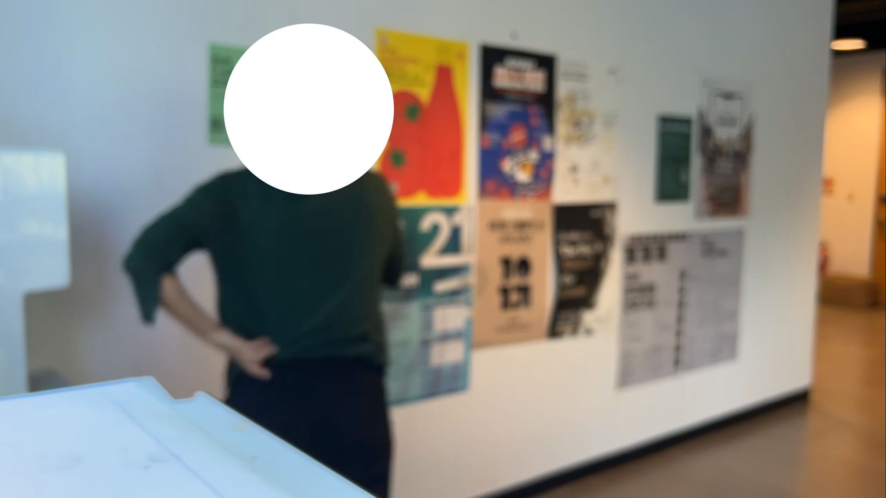
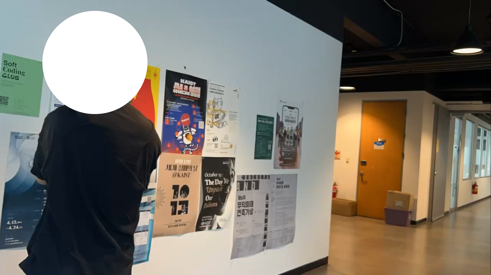
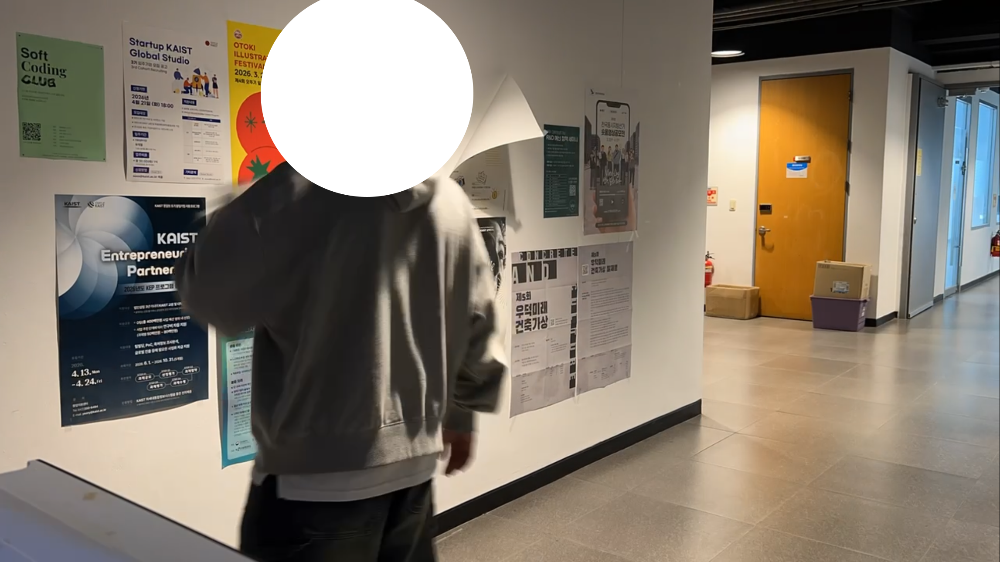
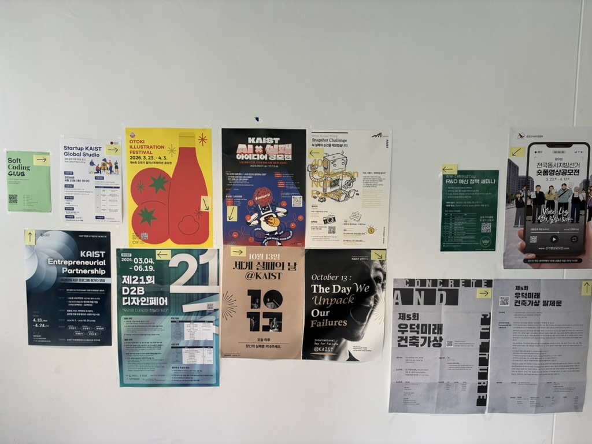
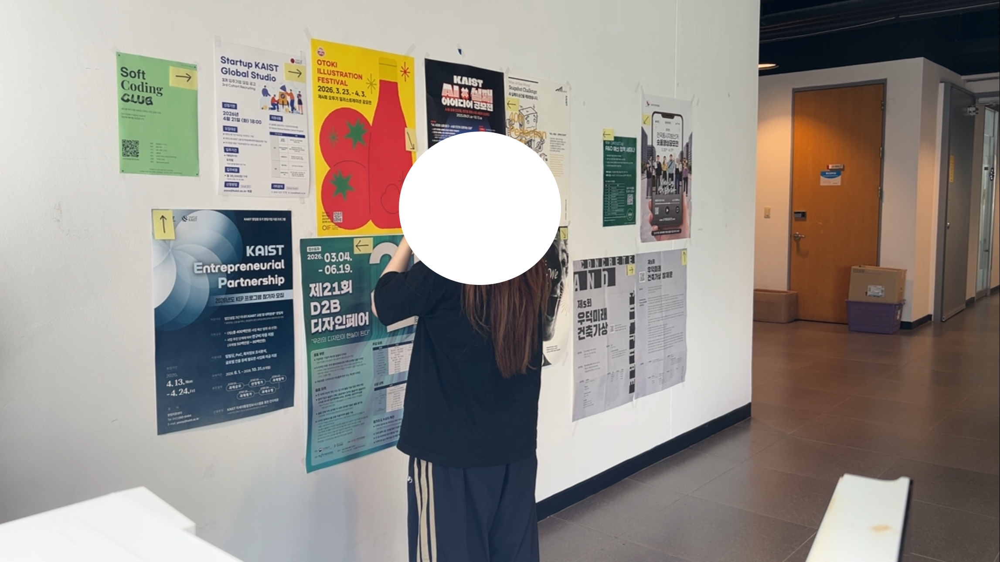
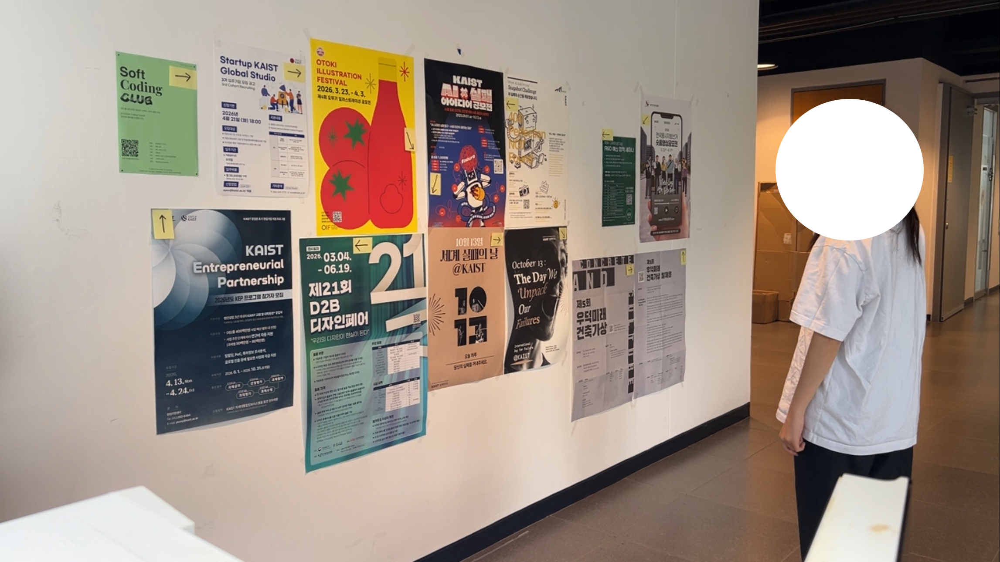
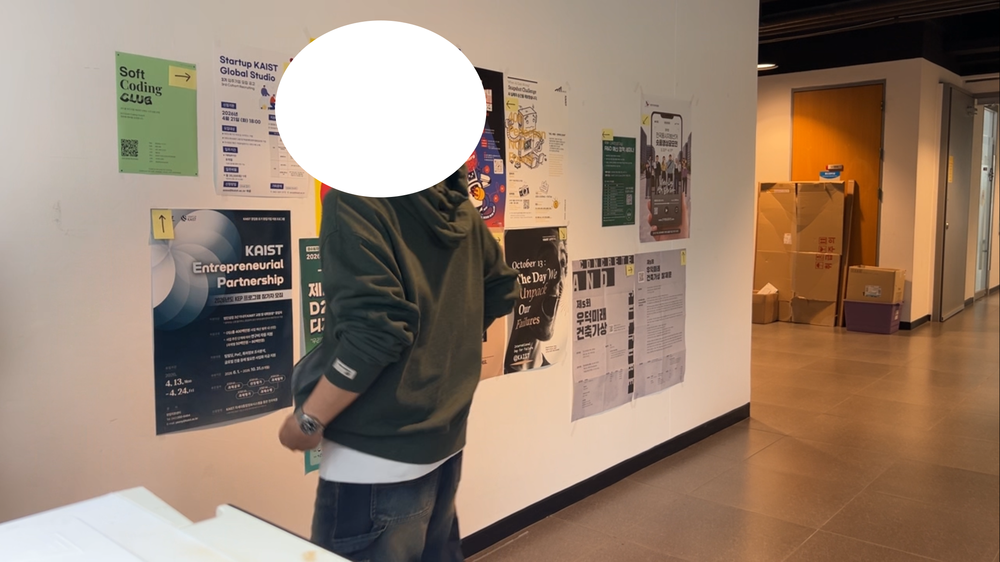
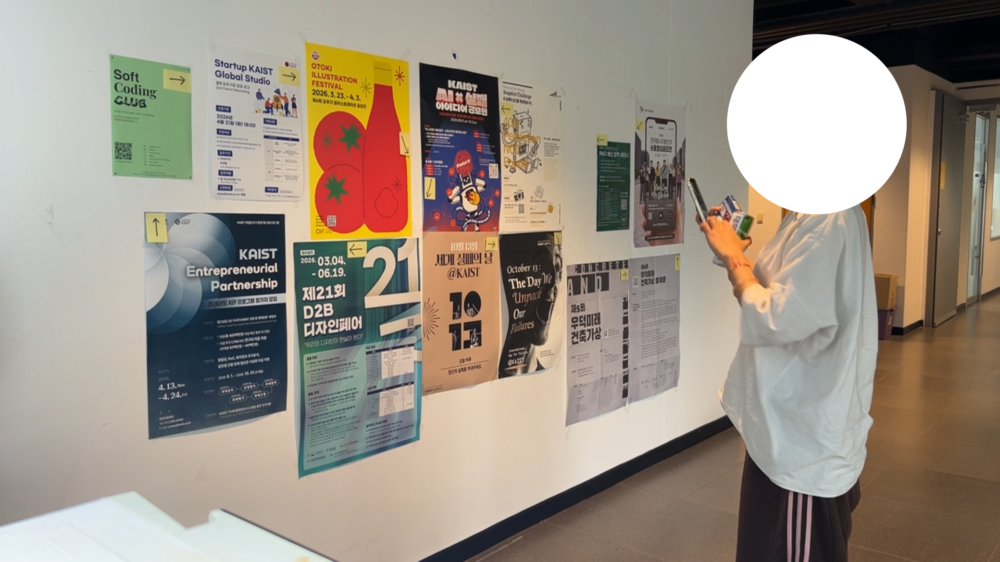
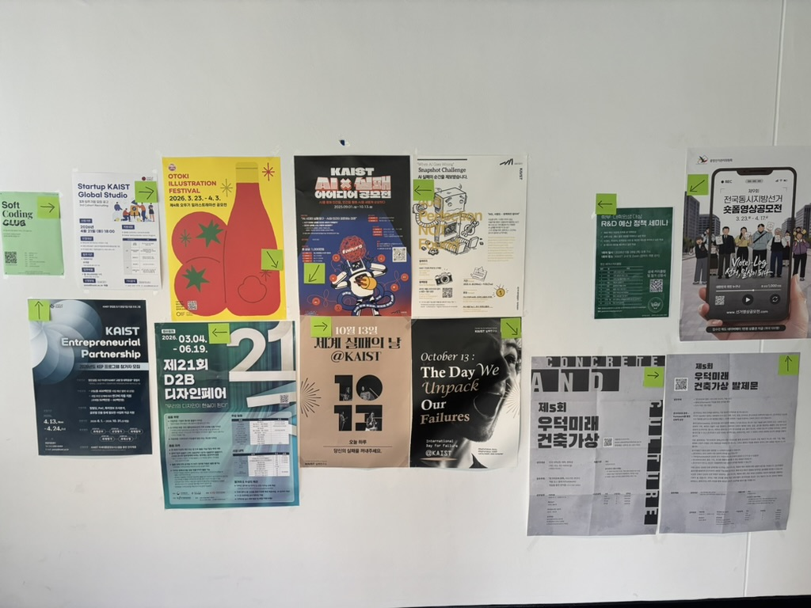
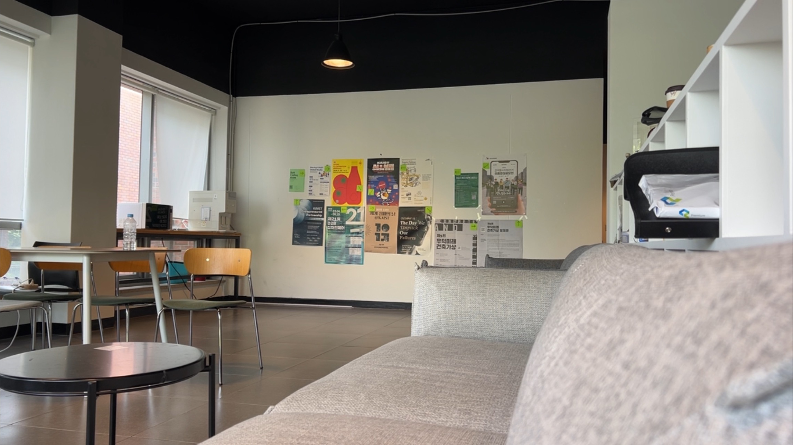
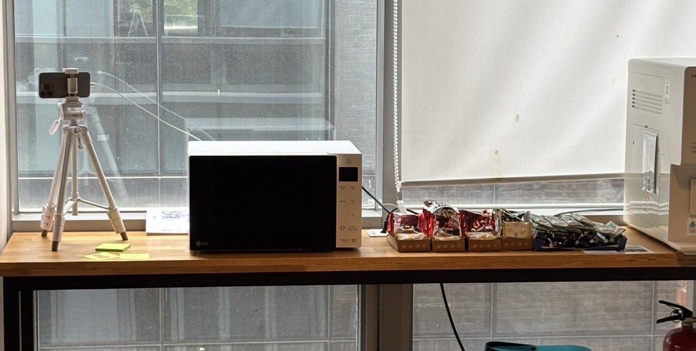
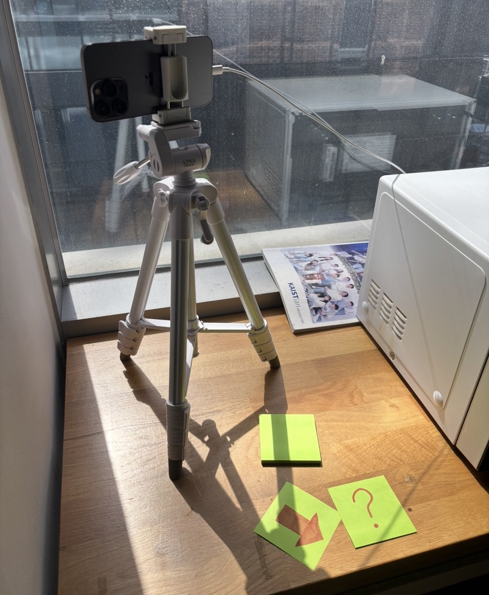

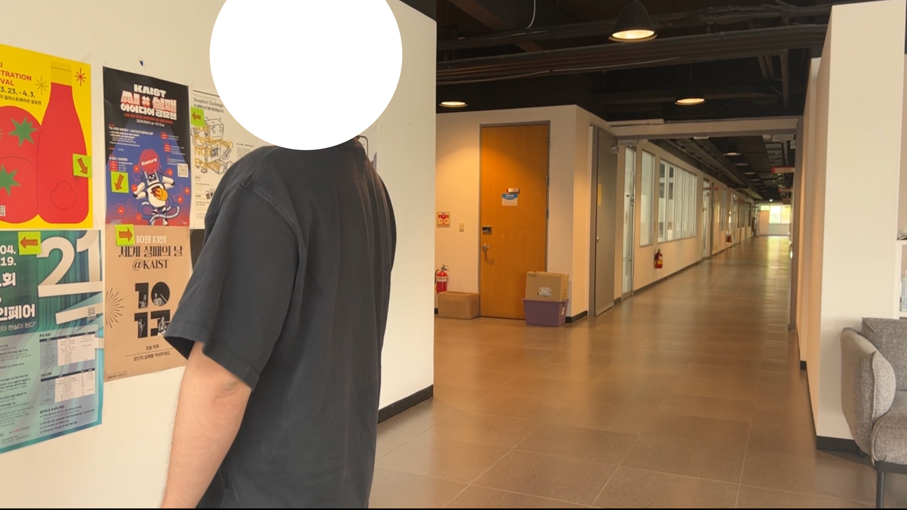
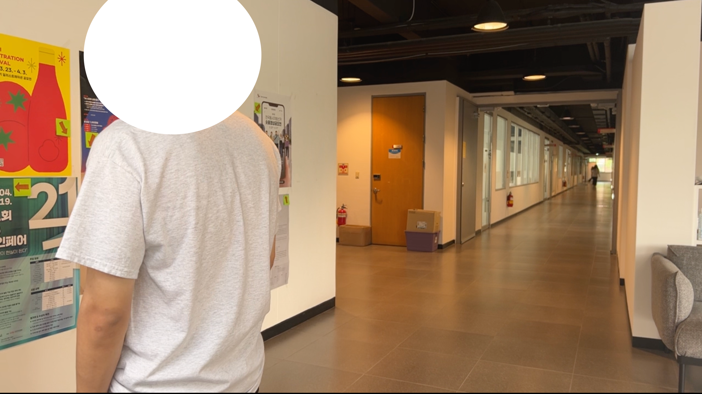
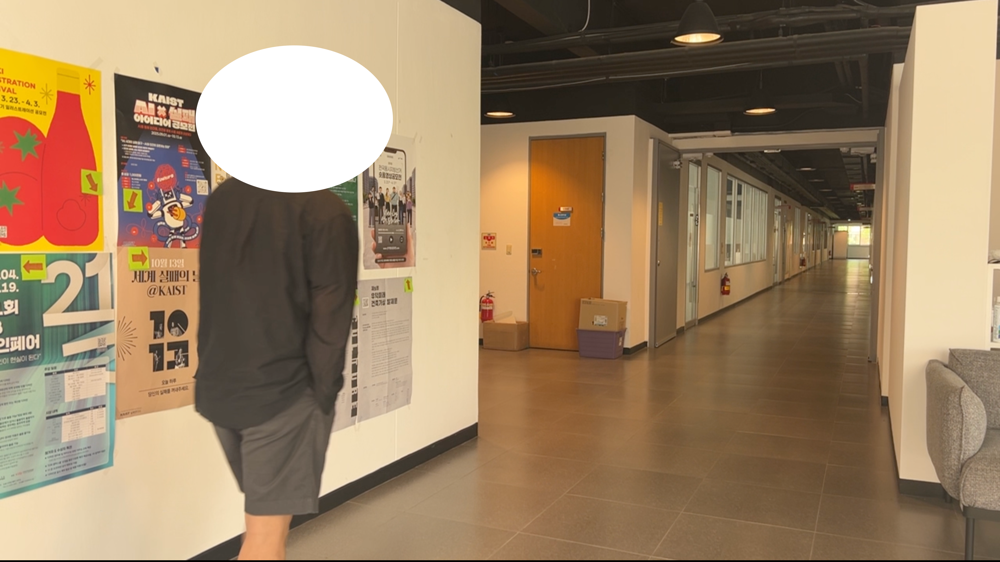


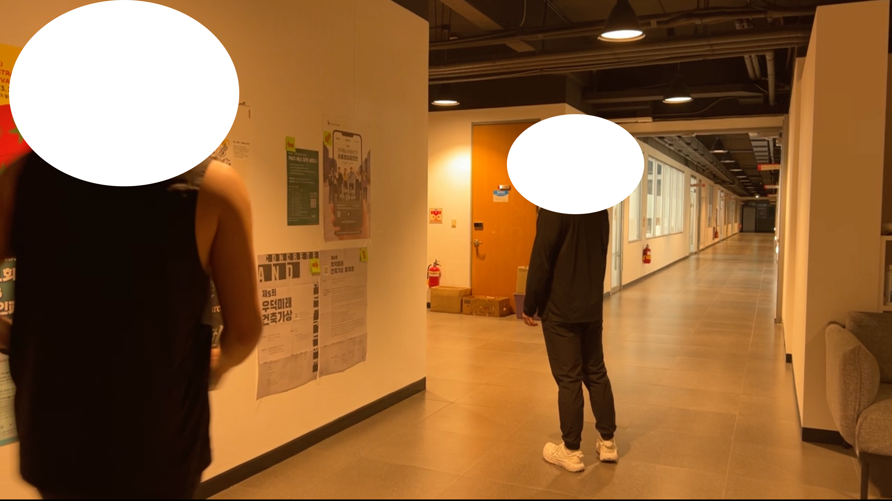